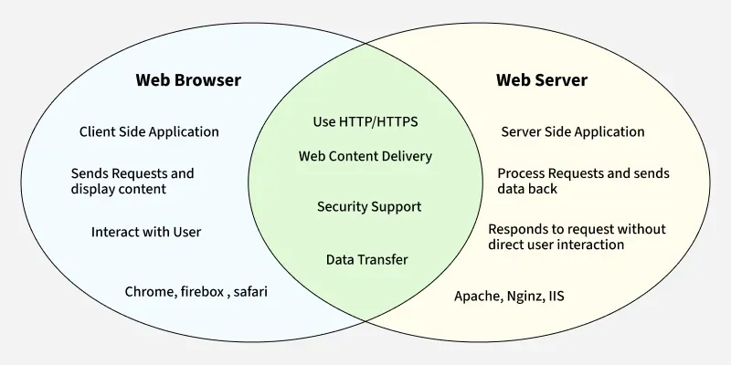

A web server is a computer system or software that stores, processes, and delivers web pages to users over the internet. When you type a website address into your web browser, the browser sends a request to the web server where that site is hosted. The server then responds by sending the requested files—such as HTML, images, and videos—which the browser uses to display the webpage on your screen. Web servers can handle many requests at once and are essential for keeping websites online and accessible at all times. Popular web server software includes Apache, Nginx, and Microsoft IIS. In short, a web server acts as the backbone of the internet by hosting website content and making it available to users worldwide..
 FOR MORE ;CLICK HERE
FOR MORE ;CLICK HERE
A web browser is a software application that allows users to access and view websites on the internet. It works by connecting to web servers, retrieving the necessary data such as HTML, images, and videos, and then displaying it in a readable and interactive format. Common web browsers include Google Chrome, Mozilla Firefox, Microsoft Edge, Safari, and Opera. Each browser offers features like bookmarks, tabs, and privacy settings to enhance the user experience. When a user types a website address (URL) into the address bar, the browser locates the site and displays its content. In essence, a web browser acts as a window to the internet, making it possible for users to explore websites, watch videos, read news, shop online, and much more.
 FOR MORE ;CLICK HERE